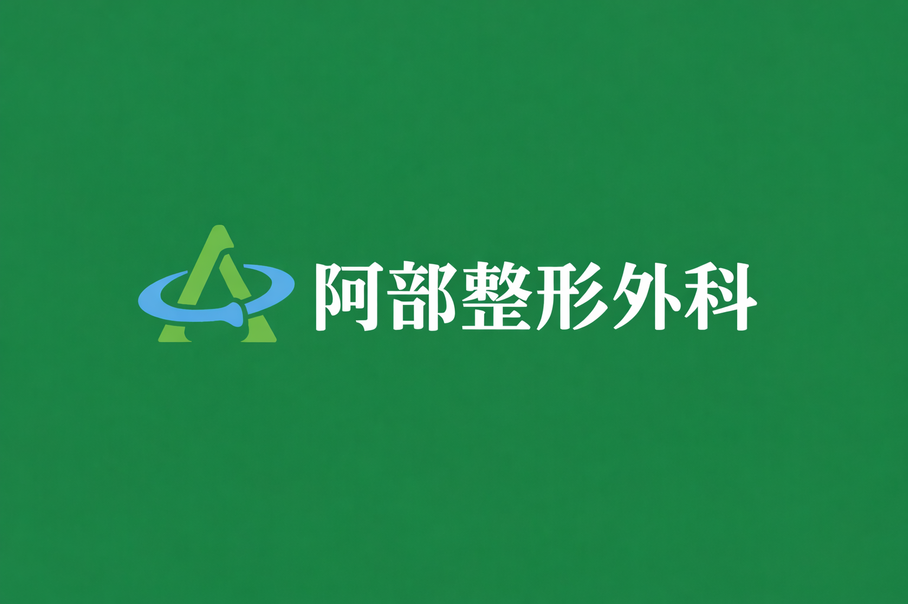

院長紹介

院長：阿部 健男（あべ たけお）
学歴
- 日本大学医学部 卒業
- 日本大学大学院医学研究科 修了
- 医学博士
主な職歴
- 駿河台日本大学付属病院
- 埼玉県立小児医療センター
- 本庄総合病院 整形外科 整形外科部長
資格
- 日本整形外科学会専門医
- 日本整形外科学会認定スポーツ医
- 日本整形外科学会認定脊椎脊髄病医
- 日本運動器リハビリテーション学会研修修了
- 世田谷区認知症相談医
所属学会
- 日本整形外科学会
- 日本骨折治療学会
- 日本手の外科学会
- 日本運動器リハビリテーション学会
設立理念
整形外科医局に在局中のほとんどは大学病院で診療に関わっておりました。主にスポーツについて携わり、 日商岩井アメリカンフットボールチーム（現TRIAX）のチームドクターや、スポーツ班の活動として読売ジャイアンツのゲームドクター、 セイコースーパーテニスのゲームドクターの仕事なども経験して参りました。
その間に埼玉県立小児医療センターでの小児整形外科の研修や、本庄総合病院で整形外科部長として多くの外傷や変性疾患の外来診療や 手術治療の臨床経験を深めて参りました。
今後はこれらの経験を生かし、整形外科学の観点から多くの患者さんによりよい生活を提供できればと考えております。 また、成長期の子供やシニア、アマチュアからプロまで幅広く皆さまのスポーツ活動の手助けになれればと、 祖父ゆかりの地であるこちらで開業いたしました。
院長挨拶
整形外科的な観点から皆さまがより良い生活が送れるようにサポートさせて頂きたいと考えております。 腰が痛い、膝が痛い、肩が上がらないなど、なんでもお気軽にご相談ください。 病状や治療方針についてわかりやすい説明を心がけております。
当クリニックで使用しているロゴマークですが、ご想像通りアルファベットの「A」をモチーフにしております。 いくつかの候補の中からこのデザインを選んだ理由は、整形外科学の象徴といっていい「骨」のモチーフが 「人」という漢字を包んでいるようなイメージにも見えるからです。
阿部整形外科ロゴ

また、当クリニックの電話番号下4桁はそのような願いを込めて「3725（みんなニッコリ）」にさせて頂きました。 どうぞよろしくお願いいたします。